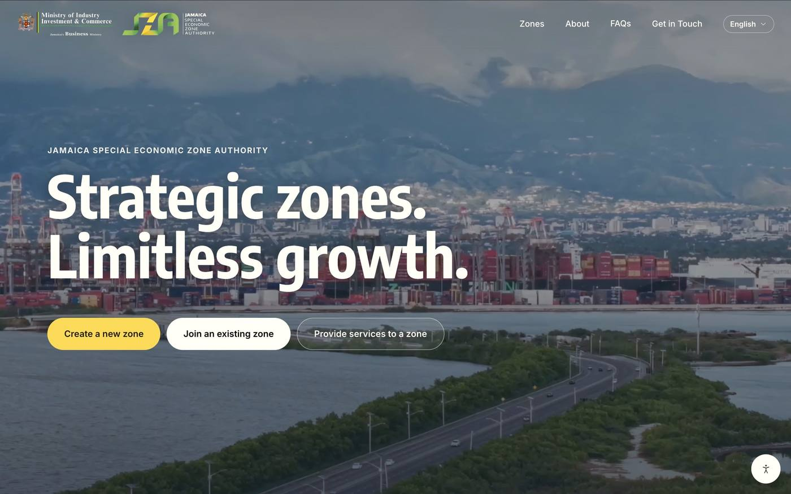
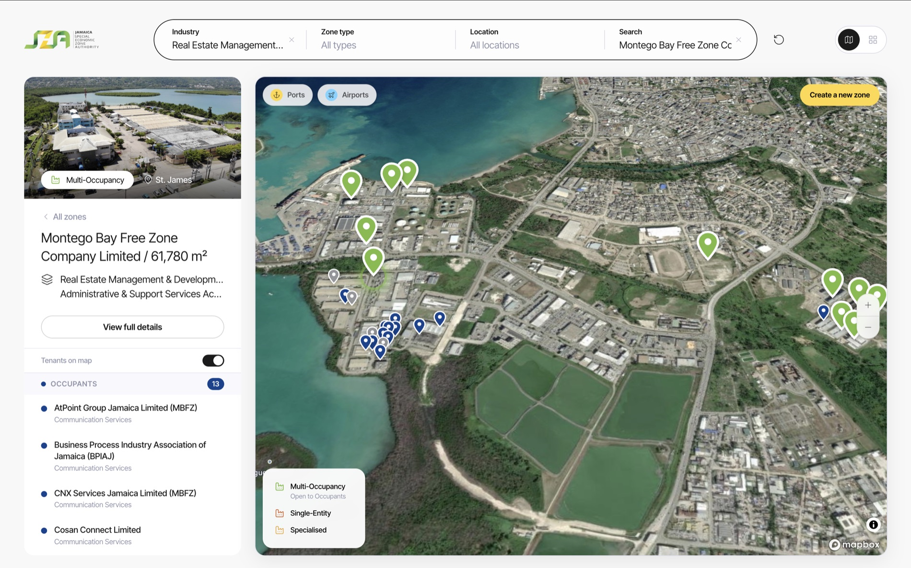
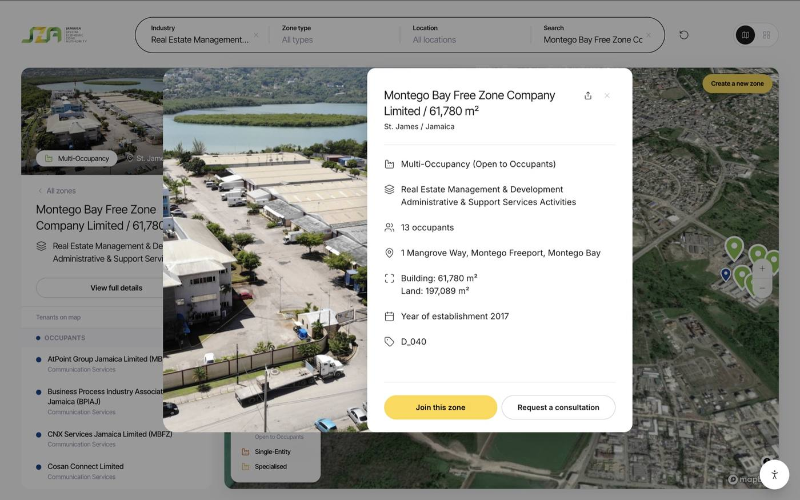
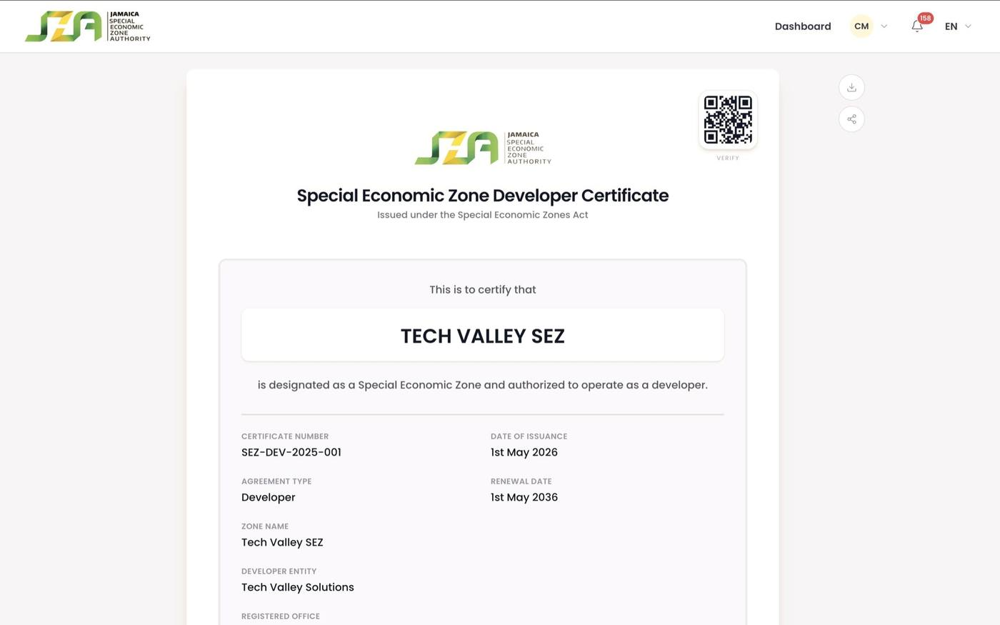

Participation in the assessment would not imply technical assistance, financing or commitment to a subsequent phase.
Countries across the region have different regulatory frameworks, institutional arrangements and levels of digitalization. Comparable information would help recognize progress, identify common needs and facilitate regional exchange.
Identify the applicable rules, responsible institutions and current arrangements for managing zones.
Identify the main procedures, requirements, steps, costs, timelines and responsible authorities.
Identify which services are available online, how institutional systems interact and which processes each country considers priorities for improvement.
Based on the assessment, the following areas of collaboration are possible. Their inclusion does not imply that technical assistance or financing is currently available.
Documenting and publishing clearly how zone procedures are carried out.
Analysing how rules and procedures relate, to identify opportunities for simplification.
Turning previously simplified procedures into accessible, integrated digital services.
Depending on the priorities identified, possible future responses could include regulatory analysis, procedure simplification, capacity development and the use of tools such as UNCTAD’s eRegistrations and smart rules approaches. Any such activity would require a separate request, agreed scope and identified resources.
These experiences illustrate possible approaches. They are not proposed projects for Central Asia and would not be replicated without adaptation to each country’s priorities, institutions and legal framework.
The national trade portal (tradeinfo.kz) shows how procedures can be documented from the user’s point of view: steps, institutions, costs, timelines and legal basis.
This experience shows a concrete way to make zone services transparent, simple and digital. It is a reference, not a model to copy: any solution would have to be adapted to each country’s legal framework, institutions and priorities.




Each subsequent step would depend on country interest, institutional agreement, available partnerships and identified resources.
Review the responses and identify common needs, national priorities and existing initiatives.
Present the preliminary regional findings to participating countries and the WFZO Regional Office.
Explore which needs might be addressed nationally, regionally or through knowledge exchange.
Consider potential partners, cooperation mechanisms and financing opportunities for selected priorities.
If a country requests support and resources can be identified, prepare a separate project or pilot proposal with an agreed scope.
This initiative is at an exploratory stage and entails no commitment for participants, the Regional Office or UNCTAD. Regional results would be presented in consolidated form; any individual reference would require the country’s consent.